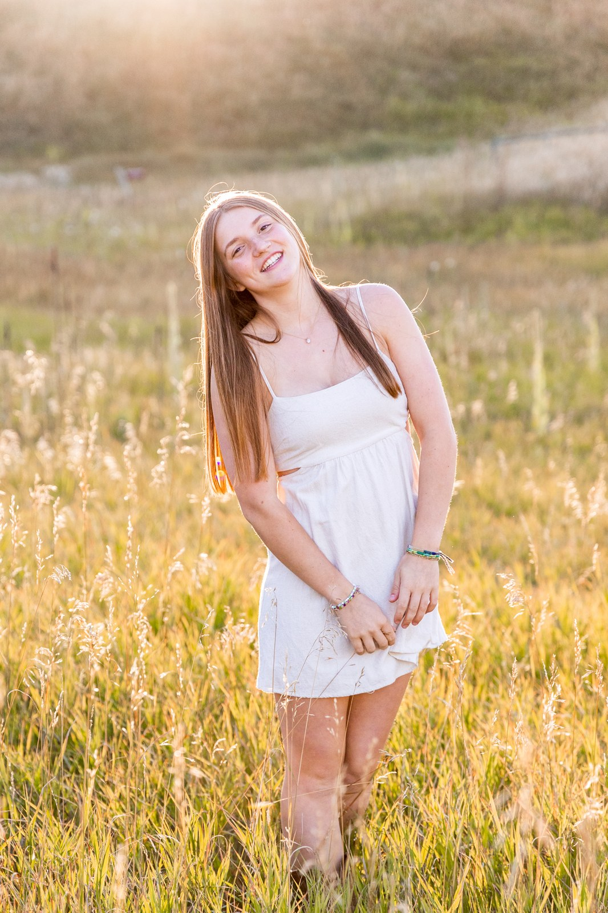
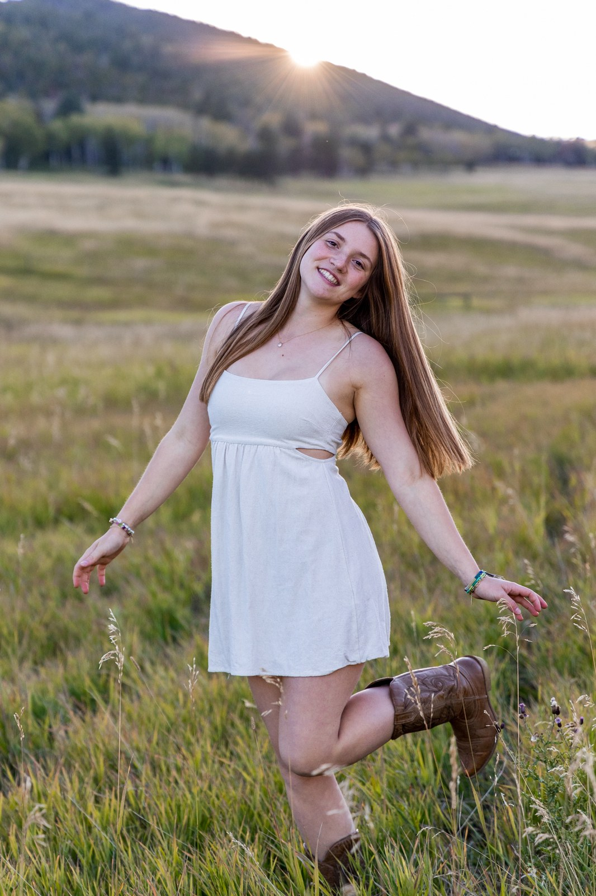
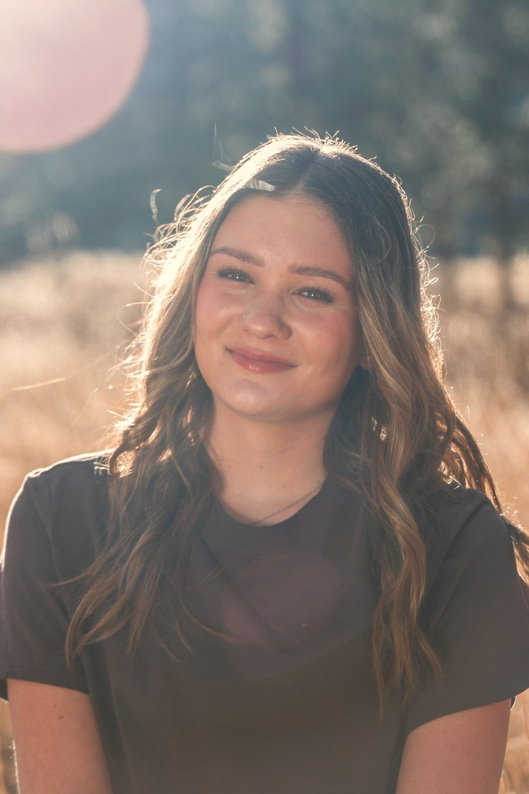
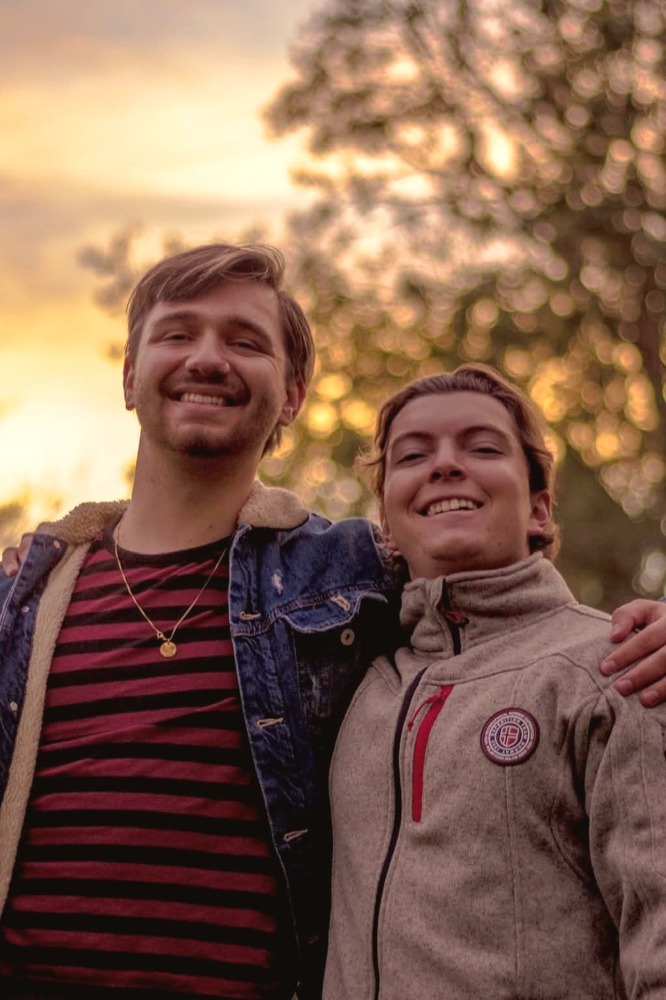

Portraits & Seniors
Colorado Portrait & Senior Photography
I photograph senior portraits and personal portraits across Colorado, mostly around Denver, Littleton, Boulder, and out at Red Rocks and the Front Range foothills. Whether it is senior photos for the Class of 2026 or a set of images that finally feel like you, we pick a location that fits your personality and shoot in the best light of the day.
Everything is a blend of film and digital, with a warm, natural finish. My goal is simple: photos where you look like yourself on a good day, not stiff and not overposed.








